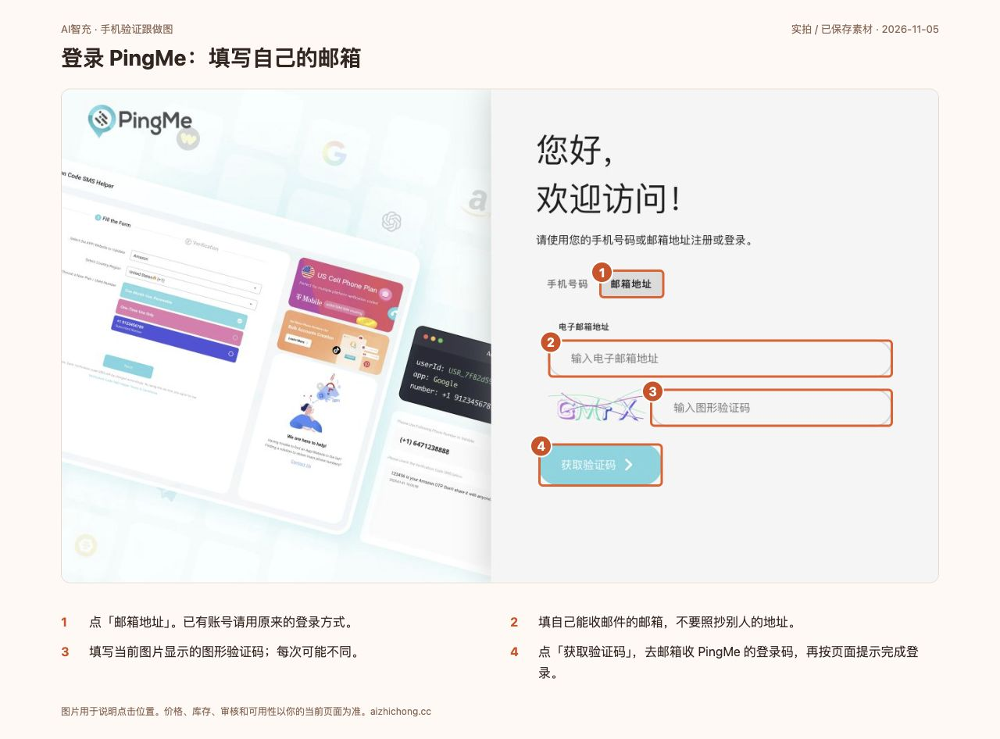
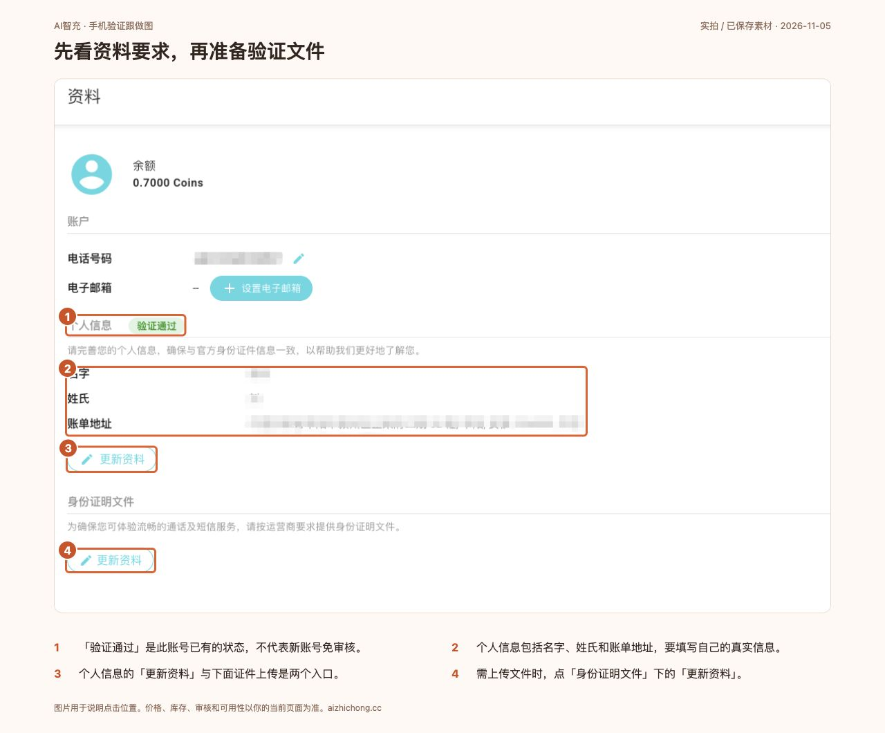
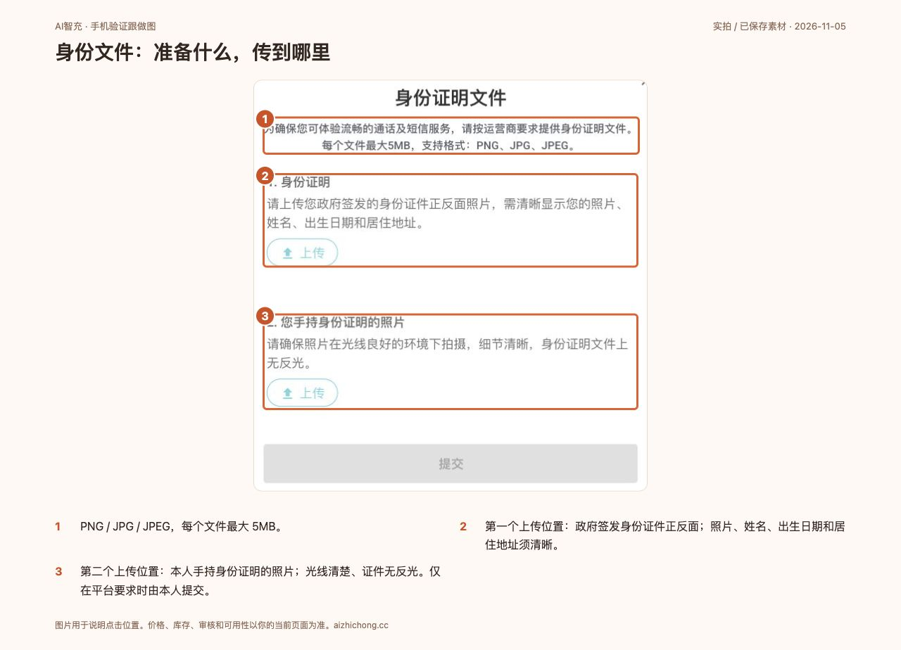
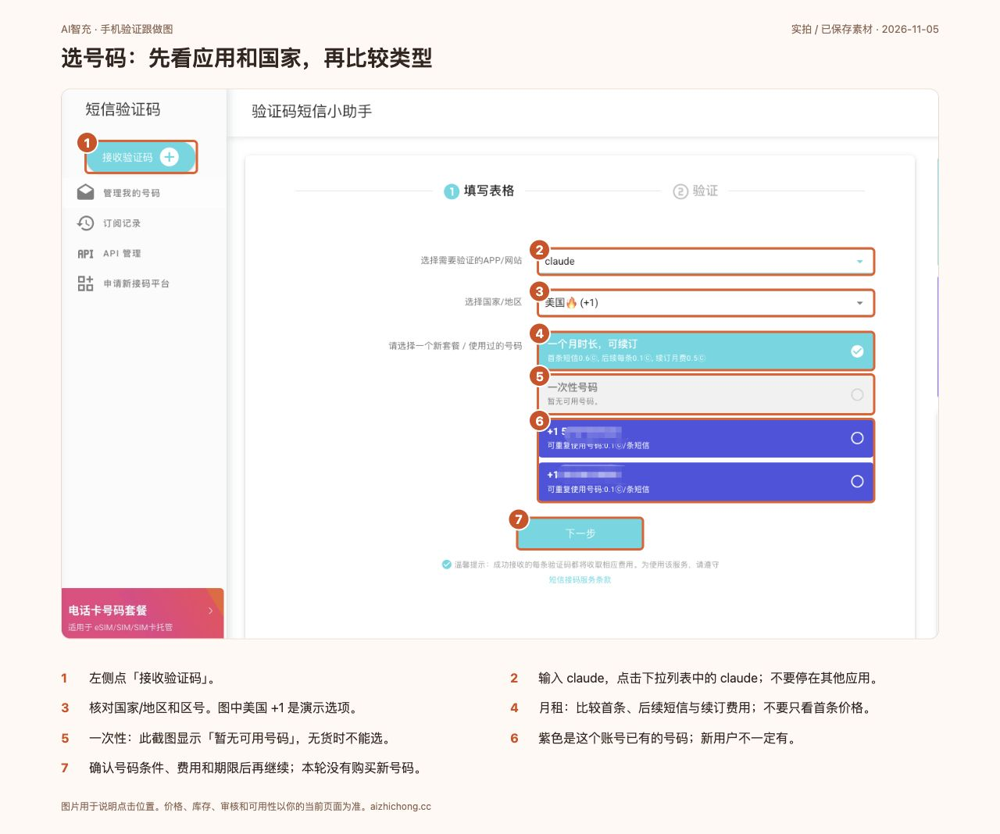
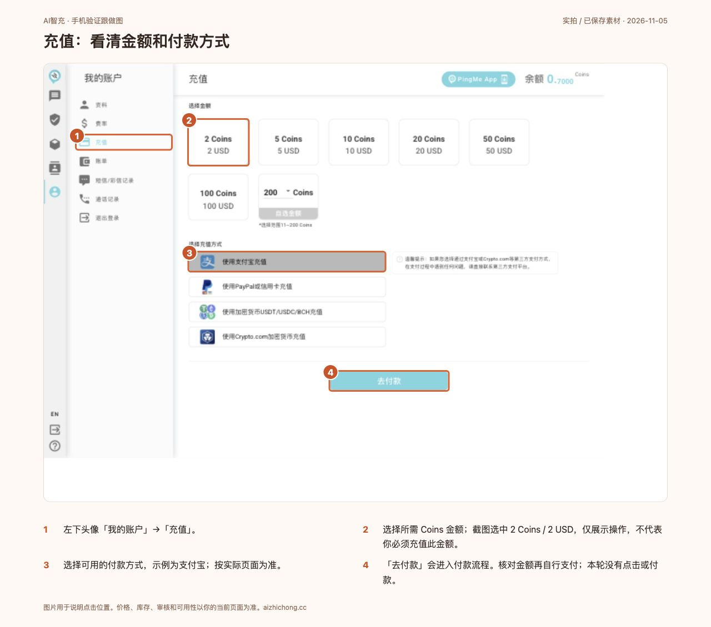
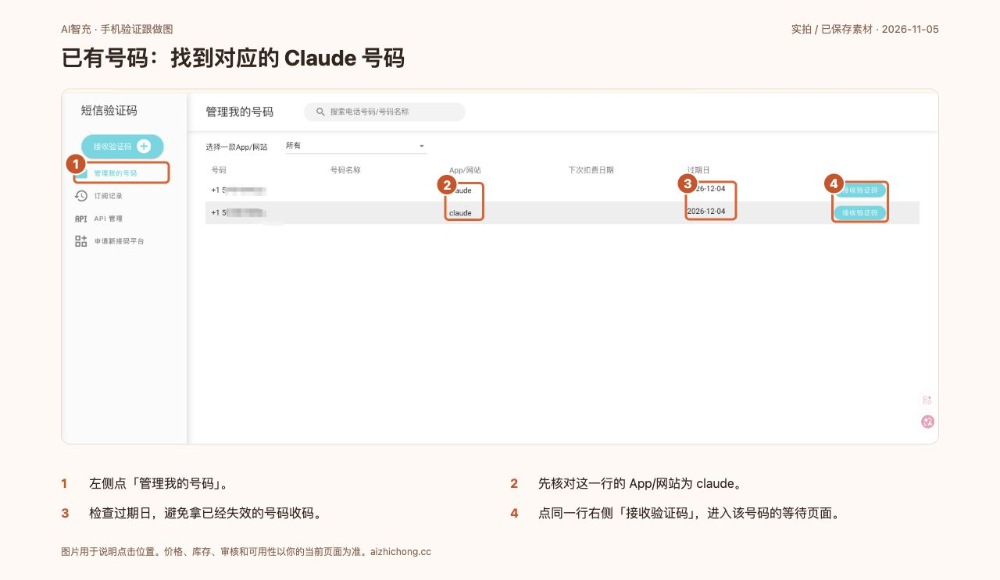
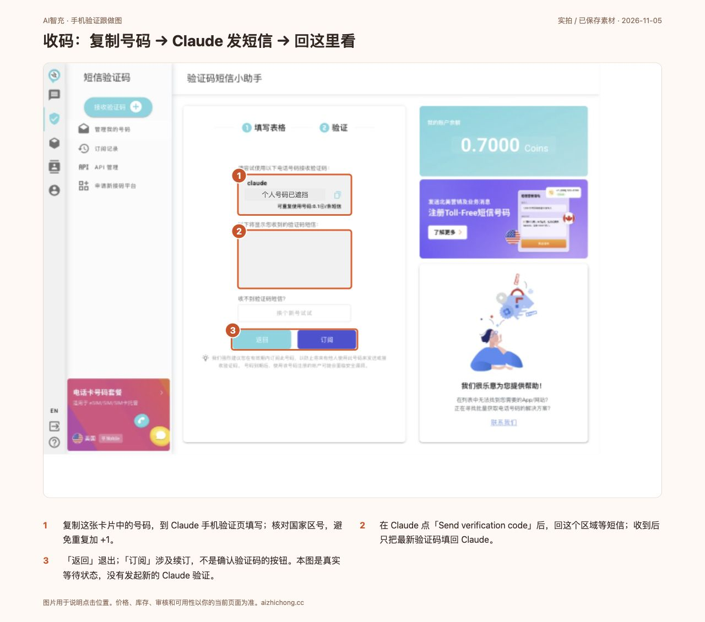
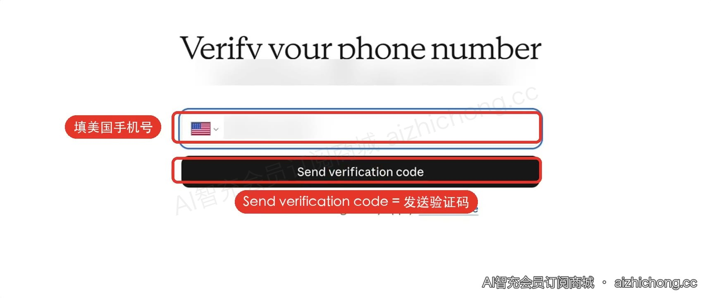
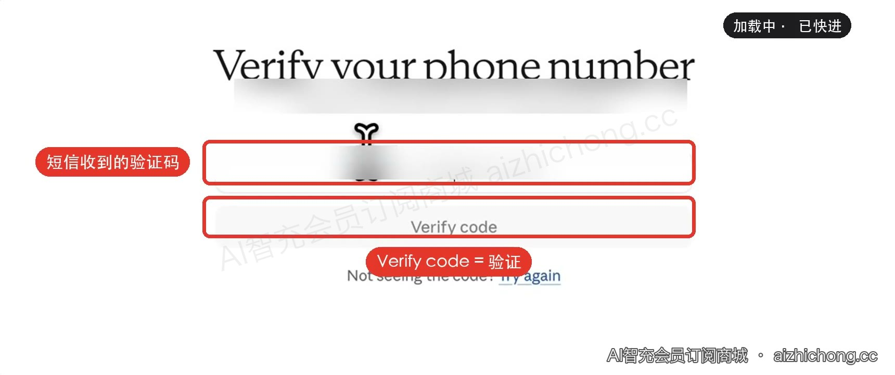

跟着做开始前，准备这几样
- 能收邮件的邮箱（或你原来的 PingMe 登录手机号），以及已经打开的 Claude 手机验证页面。
- 按 PingMe 页面要求准备真实姓名、账单地址；如要求身份文件，再准备证件正反面和手持证件照片。
- 先看号码类型、可用国家、期限、费用与余额，确认符合条件后再决定是否充值。
先确认号码适用条件。Claude 官方要求受支持地区的号码，不接受 VoIP、Google Voice、应用生成号码或座机，并建议使用能长期访问的号码。PingMe 列出 claude 只表示它提供该接码项目，不等于 Claude 保证接受每一个号码。已有符合要求的个人号码可直接在 Claude 收短信，无需买号。
查看 Claude 官方要求 ↗ ✓ 完成标志：知道自己用什么号码、是否需要平台审核；未确认适用性时先不付款。
跟着做1. 打开 PingMe，注册或登录
接码平台（收美国短信验证码）：pingme.tel森林的邀请码：AEGHZGZ
新用户注册时填写邀请码，可按平台活动领取新人奖励。
- 手机号注册：在 PingMe App 注册流程的邀请码栏填写 AEGHZGZ。
- 邮箱注册：按官方说明，在 App 的 Profile（我的/资料）→ Fill in Invite Code（填写邀请码） 输入；需在创建新账号后 24 小时内完成。
- 按平台要求完成号码设置，再核对奖励。具体金额、资格和发放以当前平台规则为准。
网页版若没有邀请码栏，可去官方 App 完成填写；下方登录截图不展示邀请码入口，不要把邀请码填进验证码框。
这是森林的推广邀请码，符合活动条件时双方可能获得奖励。查看官方奖励说明 ↗ · 官方 App 下载 ↗
- 新用户可按「邮箱地址」入口操作；已有账号用原来的登录方式，避免进入另一个空账号。
- 填写自己的邮箱和页面上的图形验证码，再点「获取验证码」。
- 去邮箱找到 PingMe 发来的邮件，按下一页提示填写登录码，完成注册/登录。
这里的邮箱验证码只用来登录 PingMe。后面从 Claude 发来的短信验证码，用途不同。

本次实拍：PingMe 邮箱登录入口 · 点击查看大图✓ 完成标志：进入 PingMe 后台，能看到左侧导航。
跟着做2. 完善资料，按要求完成验证
- 点左侧头像进入「我的账户」→「资料」。
- 个人信息栏点「更新资料」，按字段填写自己的名字、姓氏和账单地址；须与证件信息一致。
- 若页面要求身份证明，点「身份证明文件」下面的「更新资料」，按对应位置上传。
- 查看提交后的状态；如显示待审核，等待平台结果，不把演示账号的“验证通过”当作自己的状态。

森林保存的资料页，个人信息已遮挡 · 点击查看大图
本次实拍：证件正反面、手持证件、格式与大小要求 · 点击查看大图身份证明弹窗要求：PNG / JPG / JPEG，每个文件最多 5MB；照片内容清晰、证件无反光。个人资料通过与身份文件提交是不同状态，按自己的页面继续。
✓ 完成标志：自己的资料与审核状态满足页面当前要求。
跟着做3. 选择 Claude、国家和号码类型
- 点左侧盾牌图标进入短信验证码区域，再点「接收验证码」。
- 在「选择需要验证的 APP/网站」输入 claude，并点击搜索结果中的 claude。等待加载完成再看价格。
- 选择符合实际使用条件的国家/地区，核对区号。截图演示美国 +1，不代表所有人都应选美国。
- 比较月租、一次性和已有号码：看有效期、首条费用、后续费用和续订费用。

已保存的 Claude 选号页；本次登录核对到相同选项 · 点击查看大图一次性号码无货时，不要照着找不存在的号码。本次页面仍显示“暂无可用号码”。月租号码也需先确认可长期保留的条件。紫色卡片是此账号已有号码，新用户可能看不到。
截图价格仅反映拍摄时页面。应用未选中或还在加载时，可能看到其他项目的价格。
✓ 完成标志：应用明确显示 claude，国家、号码类型、费用和期限已核对。
跟着做4. 需要充值时，先看金额再付款
- 点左侧头像「我的账户」→「充值」。
- 查看已有 Coins 余额；足够时无需重复充值。
- 选择所需金额，再选当前可用的付款方式。截图示例为 2 Coins / 2 USD、支付宝。
- 核对金额后，由本人点「去付款」并按支付页面完成。保存订单，再回平台查看余额是否更新。

本次实拍：金额、支付方式和去付款按钮 · 点击查看大图本轮只展示到付款前，未提交充值订单。Coins 是平台余额单位，不要把页面的 USD 当作人民币金额。付款完成后仍没到账，先查账单与支付记录，避免重复支付。
✓ 完成标志：余额满足自己所选服务，或确认已有余额足够。
跟着做5. 获取号码，或使用自己的已有号码
新号码：回「接收验证码」，再次确认 claude、国家和号码类型，读完当前费用与期限后点「下一步」，按平台实际提示取得号码。如仍要求审核或余额不足，先处理对应提示。
已有号码：打开「管理我的号码」，核对这一行的应用为 claude、号码仍在有效期，再点同一行的「接收验证码」。

已保存的号码管理页，号码已遮挡 · 点击查看大图本次使用已有号码查看等待页，未购买新号码。新号码的确认/扣费页面尚未实拍，不把已有号码流程说成一次新购买的成功记录。
✓ 完成标志：进入所选号码的收码页面，看到自己的号码。
跟着做6. 切回 Claude 发短信，再回 PingMe 收码
PingMe 复制号码 → Claude 发短信 → PingMe 看最新短信 → Claude 填验证码
- 在 PingMe 号码卡片点击复制。保留收码页面，另外切到 Claude。
- 在 Claude 核对国家区号，填写号码。若页面已有 +1，检查是否需要去掉粘贴号码里的重复区号。
- 在 Claude 点击「Send verification code」（发送验证码）。只有打开 PingMe 等待页，不会替你让 Claude 发短信。
- 回 PingMe，在号码下面的短信区域查看最新消息；短信内容出现后，提取本次 Claude 验证码。

本次实拍：已有号码的等待短信页，个人号码已遮挡 · 点击查看大图
已有注册视频截图：Claude 发送短信按钮本图没有收到新的短信，因为此次没有发起 Claude 验证。按钮「订阅」属于号码续订，不是验证码确认。
✓ 完成标志：PingMe 的短信区域出现本次 Claude 发来的验证码。
跟着做7. 填回最新验证码，确认注册通过
- 切回 Claude，把本次短信验证码填进验证框。
- 点「Verify code」（验证）。不要填 PingMe 登录邮件里的验证码，也不要填旧短信的过期码。
- 看到 Claude 后续设置或对话页，再继续账号教程。

已有注册视频截图：填写验证码✓ 完成标志：Claude 验证通过，进入后续设置或对话页面。
卡住时，按当前提示处理
一直没有收到短信
先确认已经在 Claude 点击发送，且号码、国家区号正确。Claude 官方说明超过 5 分钟可点 Try again 重新输入号码。不要连续高频重发；按屏幕限制等待。
收到验证码，但 Claude 不接受
使用最新一次验证码，确认没有填成 PingMe 登录码。验证码会过期；按 Claude 的 Try again 重新获取。收码成功不等于账号注册一定成功。
号码被拒绝、提示已使用或次数过多
按 Claude 的具体提示处理，核对号码类型和地区；不能用等待或换网络承诺解除号码限制。需要其他号码时，先确认新号码符合官方要求再决定购买。
没有收到短信，会不会扣费或退款？
PingMe 公开说明验证码短信按成功接收收费；号码订阅和续订是另外的费用。充值退款按平台条款逐案处理，不能写成“没注册成功一定全退”。有争议时保留订单和错误提示，联系 PingMe 支持。
用完能否丢掉号码？
Claude 官方建议使用能长期访问的号码；PingMe 提醒号码过期后可能由他人使用。教程会让用户在选择号码时看清保留期限和续订条件，不默认“注册一次就永久无关”。
核对日期：2026-11-05。来源：Claude 手机验证帮助、PingMe 短信助手说明、PingMe 服务条款及本次后台实拍。
回教程，继续网页版第一次对话 →